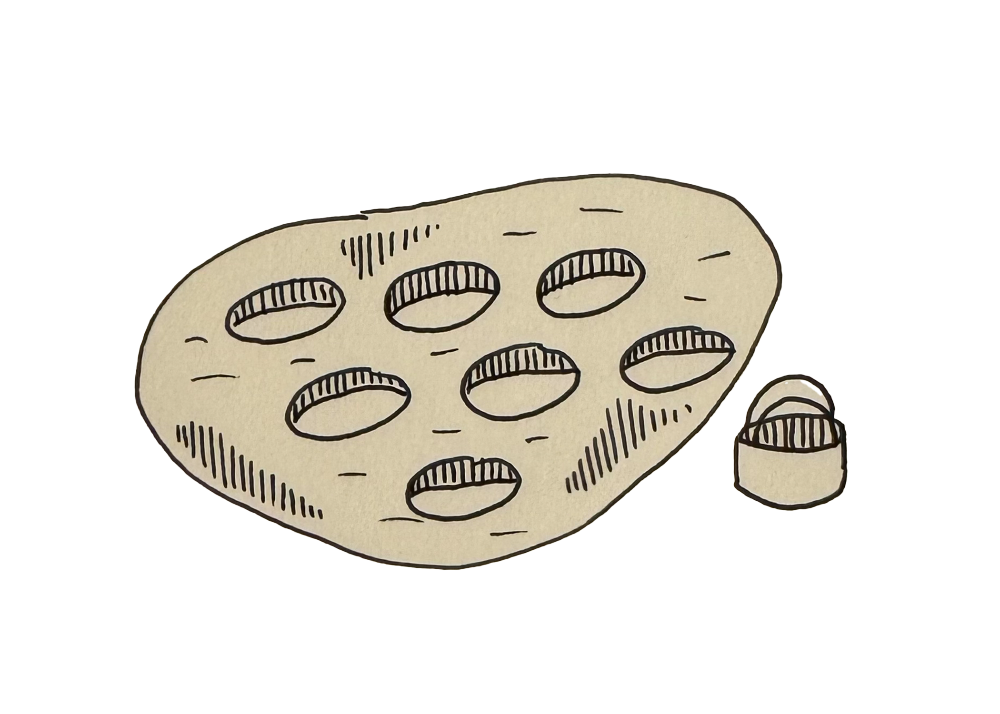

Next Step!
-
Turn dough onto lightly floured surface.
-
Gently roll dough with floured rolling pin until 1 inch thick.
-
Cut out biscuits using a floured 2-inch biscuit cutter or the rim of a cup.
-
Place biscuits on a baking sheet where the edges touch.
-
Reform the scrap dough to make additional biscuits.
